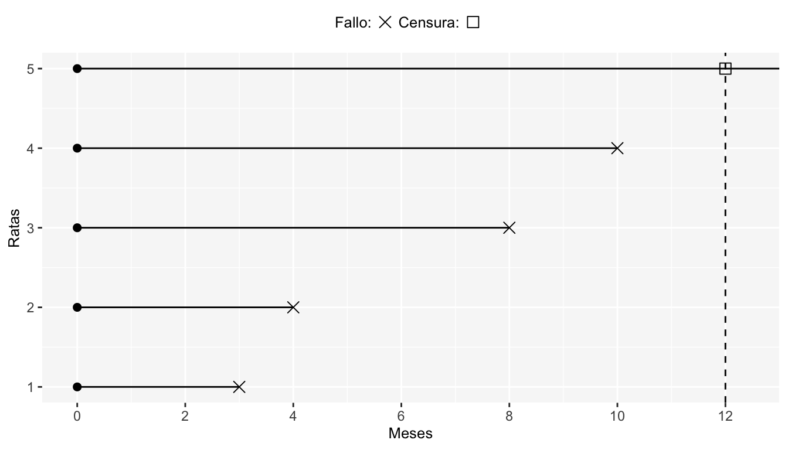
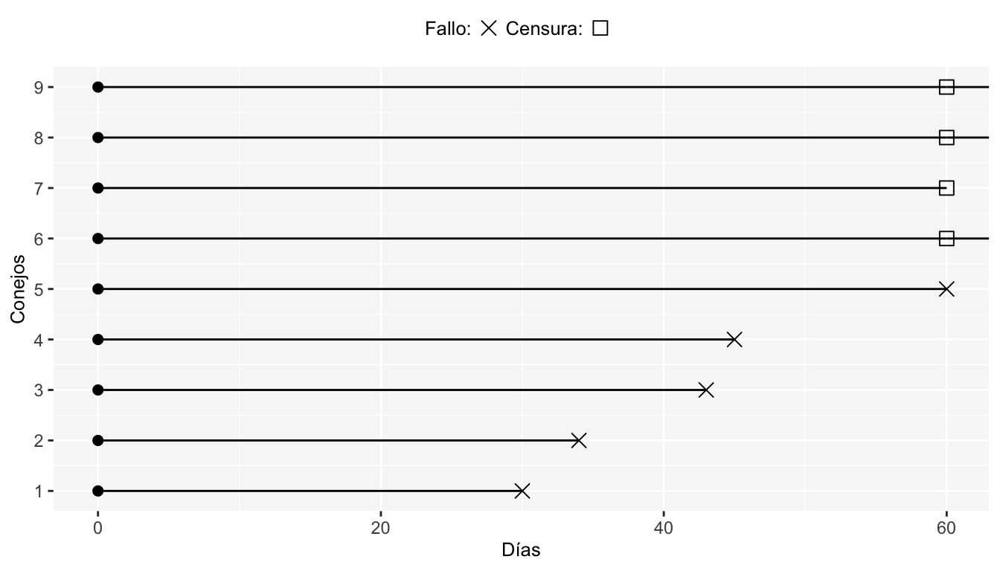
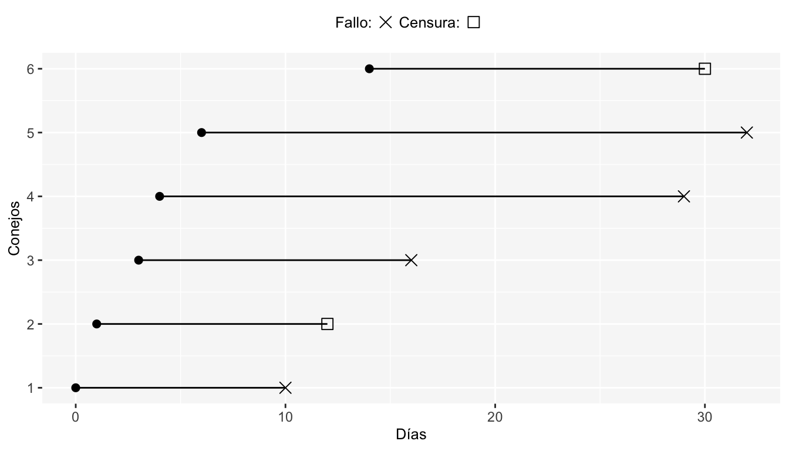

Capítulo 1 Datos Censurados
Ocurren cuando el tiempo de falla se conoce sólo en cierto periodo de tiempo. Por ejemplo, un estudio consiste en observar la muerte (tiempo de falla) de pacientes en un periodo establecido, algunos de ellos pueden estar vivos todavía al final del periodo de estudio. Los tiempos de supervivencia exactos de estos sujetos son desconocidos, pero tenemos información parcial. Estas son llamadas observaciones censuradas, y se denotan por \(+\).
1.1 Censura por la Derecha Tipo I
Nos referimos a este tipo de censura cuando el estudio se termina a un tiempo fijo predeterminado (tiempo de censura) independientemente del tamaño de la muestra (número total de individuos en el estudio).
Ejemplo
Un investigador de la facultad de ciencias realiza un estudio en 5 ratas de laboratorio y ha determinado que la duración de este será de un año y medirá el tiempo (en meses) en que cada rata fallece . Al cabo del año se obtuvieron los siguientes resultados: \(3,4,8,10,12^+\), esto quiere decir que una rata murió a los tres meses iniciado el estudio, otra lo hizo en 4 meses, etcétera; la quinta rata permaneció con vida hasta el final del estudio, es decir, no presentó la falla en el tiempo predeterminado de observación por lo tanto es un dato censurado.

1.2 Censura por la Derecha Tipo II
Ocurre cuando el estudio continua hasta que se presenta la falla de los primeros \(r<n\) individuos. Donde \(r\) es el número de individuos predeterminado a observar y \(n\) es el número total de individuos en el estudio. En este tipo de censura hay dependencia del tamaño de muestra y de las fallas que se observen.
Ejemplo
Las limitaciones económicas para la investigación científica han hecho que un especialista en cancerología tome la decisión de observar los tiempos (en días) de sólo 5 conejos hasta que desarrollen un tumor, de un total de 9. Al final se obtuvo lo siguiente: \(30,34,43,45,60,60^+,60^+,60^+,60^+\), ¿Cómo interpretaría usted los resultados obtenidos por el especialista?

1.3 Censura por la Derecha Tipo III
Llamada también censura aleatoria. Se denomina así porque el tiempo de censura lo determina un fenómeno aleatorio, que tiene lugar durante la consecución del estudio e impide seguir con la observación del individuo hasta el tiempo final; es decir que \(T_i\) es una variable aleatoria. En general, la censura aleatoria surge cuando los individuos salen del estudio sin presentar la falla por razones no controladas por el investigador. Cuando sucede tal censura, se dice que se tiene una análisis de riesgos competitivos.
Finalmente, si el mecanismo de censura aleatoria es dependiente de los tiempos de falla, se dice que este es una censura informativa, ya que otorga información a los tiempos de falla; en caso contrario es no informativa.
Ejemplo
Algunos ejemplos son la migración a otra ciudad o los casos donde el paciente se retira del estudio o muere por alguna causa ajena al evento de interés. La siguiente gráfica muestra un ejemplo de datos con censura aleatoria.

1.4 Censura por la Izquierda
Las observaciones censuradas por la izquierda serán aquellas en las que el evento de interés ha tenido lugar antes del punto de inicio del estudio. Así, el tiempo de censura en este caso será el tiempo de inicio del estudio.
Ejemplo
Un ejemplo de este tipo de censura son los tiempos al primer uso de marihuana. Como se observa en el ejemplo en la introducción de este capítulo, el levantamiento de la información se hace sobre alumnos de preparatoria y hay casos en los que el inicio del consumo es a una edad previa al levantamiento de los datos. Entonces aquellos jóvenes cuyo primer uso de marihuana es a una edad previa a la registrada en ese momento, serán consideradas como observaciones censuradas por la izquierda.
Frecuentemente si un estudio tiene censura por la izquierda, entonces se tendrá doble censura, por lo que se denota como \(C_i\) al tiempo antes del cual algunos individuos presentan el evento de interés y \(C_d\) al tiempo después del cual algunos de los individuos presentan el evento de interés.
1.5 Censura por Intervalos
Ocurre cuando los individuos en el estudio son monitoreados intermitentemente en momentos discretos de tiempo, de modo que, es posible que el suceso de estudio haya tenido lugar en un tiempo entre dos de las mediciones.
Si el individuo \(i\) no ha presentado el evento de interés al fin del tiempo \(I_i\) pero a la siguiente observación \(D_i\) sí presentó el evento, entonces es una falla censurada en el intervalo \((I_i,D_i)\).
Ejemplo
Un investigador lleva a cabo un estudio en ratas diseñado para evaluar los efectos de dietas ricas en vegetales en el riesgo de cáncer de mama. El tumor mamario es inducido con una única dosis de DMBA al inicio del estudio. 6 semanas después de la administración del DMBA, cada rata es examinada una vez a la semana por 14 semanas y el tiempo en que el tumor es palpable es registrado. Si una rata presenta tumor en la quinta revisión, entonces lo que se sabe es que el tumor en la cuarta revisión no era palpable y por lo tanto este debió presentarse entre la cuarta y quinta revisión dando como resultado que esa observación esta censurada en el intervalo (semana 10, semana 11).